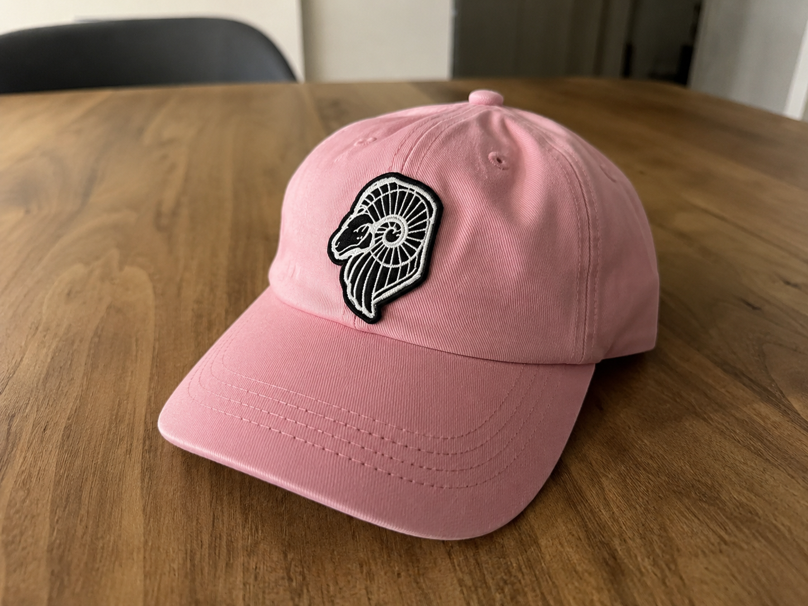

Ariete
Ariete / Drop 01 — Limited Cap Series
O boné mais icônico da Ariete.
Design leve, presença marcante e acabamento pensado para quem transforma o cotidiano em assinatura.
Design, conforto e presença
Scroll to experience
TC 00:00:00
Ariete®
Drop 01 — Disponível em breve
Ariete
Carregando Drop 01